명령 한 줄로 나오는 마케팅 감사 보고서
이 영상은 결과부터 보여 줘요. 발표자가 Claude Code 입력창에 명령 하나를 넣자, 화면에 할 일 여섯 줄이 생겨요. 홈페이지 가져오기, 업종 판별, 서브에이전트 다섯 개 띄우기, 점수 종합, MARKETING-AUDIT.md 작성, 요약 출력 순서예요. 이 순서가 4장에서 볼 SKILL.md의 단계와 그대로 겹쳐요.
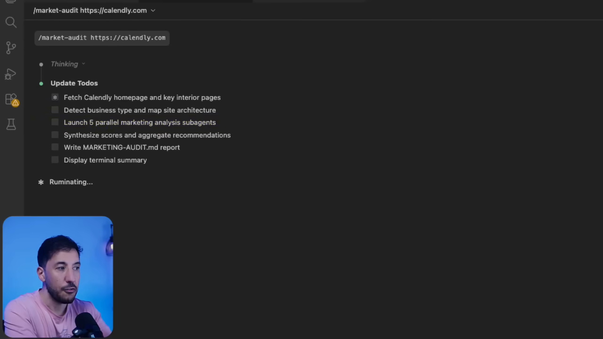
영상을 빨리 감으면 PDF 보고서가 나와 있어요. 첫 장에는 회사 이름, 주소, 날짜 아래로 75점짜리 원형 그래프가 있고, 그 밑에 경영진 요약이 붙어요. 요약에는 Calendly가 바이럴 성장 구조는 강하지만 홈페이지 문구가 오래됐다는 판단이 담겨 있어요.
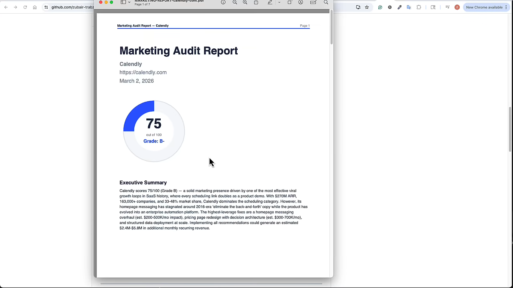
둘째 장은 여섯 항목의 점수를 막대로 보여 줘요. 아래 표의 Weight 열을 눈여겨보세요. 콘텐츠·메시지가 25%, 전환 최적화와 SEO(Search Engine Optimization)가 20%씩, 경쟁 포지셔닝이 15%, 브랜드·신뢰와 성장·전략이 10%씩이에요. 이 가중치가 종합 점수를 정해요. 6장에서 직접 계산해 볼 수 있어요.
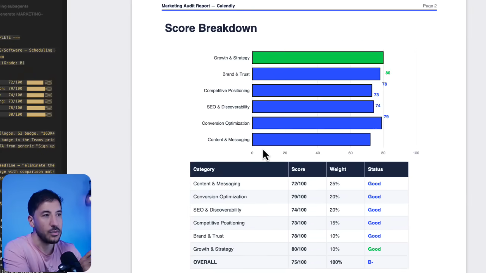
발표자는 마케팅 대행사가 이런 보고서에 월 5천~1만 달러를 받는다고 말해요. 반면 이 도구는 무료로 2분 만에 만든다는 게 이 영상의 출발점이에요. 대행사 비용은 발표자의 주장이고, 영상에 근거는 나오지 않아요.
설치: VS Code와 스킬 묶음
준비할 건 두 가지예요. Claude Code를 띄울 편집기, 그리고 마케팅 스킬 묶음이에요.
VS Code에 Claude Code 확장 설치
발표자는 VS Code를 권해요. 파일과 폴더를 보면서 Claude Code와 대화할 수 있어서예요. 확장 탭에서 'claude'를 검색하면 맨 위에 Claude Code for VS Code가 나와요. 게시자 이름 옆에 Anthropic 인증 표시가 있는지 확인하라고 해요. 비슷한 이름의 비공식 확장이 줄줄이 있기 때문이에요.
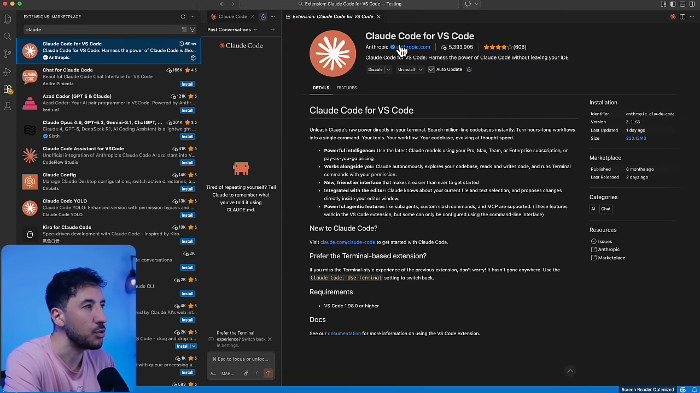
구글의 Antigravity 같은 다른 편집기를 써도 된다고 덧붙여요.
명령 한 줄로 스킬 묶음 설치
다음은 발표자가 만든 GitHub 저장소 zubair-trabzada/ai-marketing-claude예요. README 앞부분 'What This Does'에는 명령을 넣었을 때 나오는 결과 예시가 있어요. 그 아래 Installation에 설치 방법이 세 가지 적혀 있어요. 한 줄 설치(One-Command Install), 저장소를 받아서 하는 수동 설치, PDF 보고서용 pip install reportlab이에요.
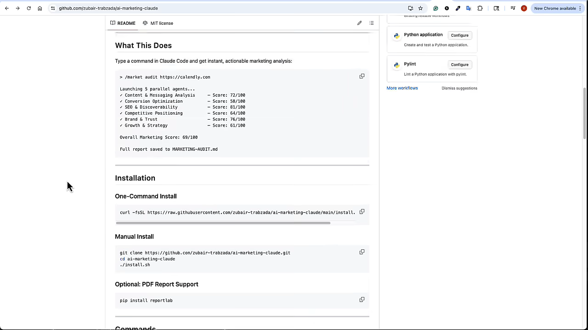
curl -fsSL https://raw.githubusercontent.com/zubair-trabzada/ai-marketing-claude/main/install.sh | bash이 줄을 VS Code 터미널에 붙여 넣으면 설치가 진행돼요. 화면 아래쪽 초록 상자 'Installation Complete!' 밑에 설치된 개수가 나와요. 에이전트 5개, 스크립트 4개, 템플릿 6개예요. 그 아래 Available Commands에 쓸 수 있는 명령 15개가 설명과 함께 나열돼요.
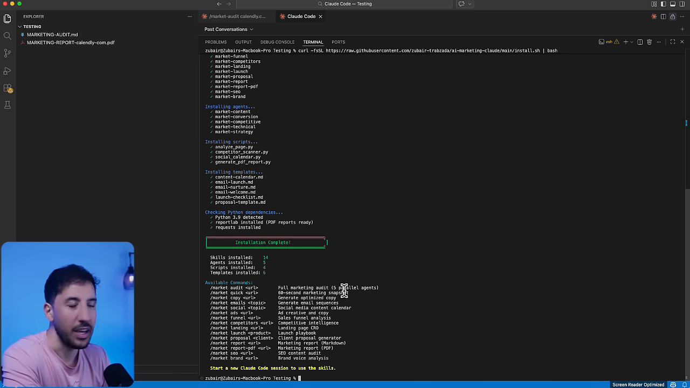
화면의 명령 목록을 옮기면 이래요. 화면에는 /market audit처럼 띄어 쓰여 있지만, 실제로 입력창에서 고르는 이름은 /market-audit처럼 하이픈으로 이어져요.
| 명령 | 받는 값 | 하는 일 (화면 설명) |
|---|---|---|
audit | URL(Uniform Resource Locator) | 전체 마케팅 감사 (에이전트 5개 병렬) |
quick | URL | 60초 마케팅 스냅숏 |
copy | URL | 개선된 카피 생성 |
emails | 주제 | 이메일 시퀀스 생성 |
social | 주제 | 소셜 미디어 콘텐츠 캘린더 |
ads | URL | 광고 소재와 문구 |
funnel | URL | 판매 퍼널 분석 |
competitors | URL | 경쟁사 분석 |
landing | URL | 랜딩 페이지 전환 최적화 |
launch | 제품 | 출시 플레이북 |
proposal | 고객 | 고객 제안서 생성 |
report | URL | 마케팅 보고서 (Markdown) |
report-pdf | URL | 마케팅 보고서 (PDF) |
seo | URL | SEO 콘텐츠 감사 |
brand | URL | 브랜드 보이스 분석 |
설치가 끝나면 Claude Code 입력창에 /를 치고 market을 검색해 보라고 해요. 명령이 자동완성 목록에 뜨면 성공이에요. 발표자는 작업할 폴더를 하나 만들어 VS Code에서 열어 두라고도 권해요.
지역 업체에 직접 돌려 보기
Calendly는 큰 회사라서, 발표자는 이번엔 지역 업체로 해 봐요. 구글에서 'san francisco med spa'를 검색해 맨 위에 나온 Nob Hill Aesthetics를 골라요. 메드 스파는 고객층이 고급이라 마케팅에 돈을 쓸 여력이 있다는 게 고른 이유예요. 홈페이지 첫 화면에는 'San Francisco's Premier Med Spa'라는 큰 문구가 있어요. 이 문구는 나중에 보고서에서 '어디에나 있는 흔한 헤드라인'으로 지적받아요.
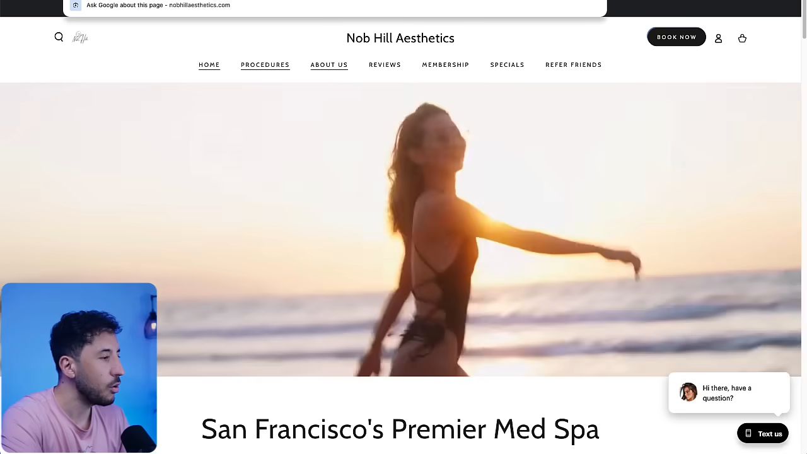
주소를 복사해 /market-audit https://nobhillaesthetics.com/을 실행하면, Calendly 때와 똑같은 여섯 단계 할 일 목록이 다시 떠요. 첫 줄 'Fetch homepage and key interior pages for discovery'에 진행 표시가 붙고, 바로 아래 Web Fetch로 홈페이지를 가져오는 게 보여요.
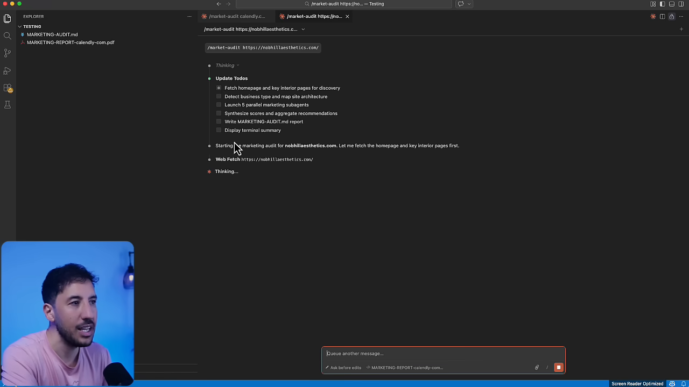
진행 중에는 여러 도메인에 접근해도 되는지 묻는 권한 창이 계속 떠요. 발표자는 하나씩 허용하면서 기다리라고 해요. 끝까지 자동으로 흘러가는 게 아니라 중간중간 사람이 허락해 줘야 한다는 점은 알아 두면 좋아요.
market-audit 스킬은 어떻게 일하나요
감사가 도는 동안 발표자는 저장소 안을 보여 줘요. skills 폴더 밑에 market-ads, market-audit, market-brand처럼 명령마다 폴더가 하나씩 있고, 폴더마다 SKILL.md 파일이 하나 들어 있어요. Claude Code는 원래 범용 비서라서, 특정 일을 전문가처럼 하게 하려면 그 지시를 이 파일에 적어 둬요.
market-audit/SKILL.md의 첫 줄 제목은 'Marketing Audit Orchestrator'예요. 바로 아래 문단이 이 스킬의 역할을 한 문장으로 정해요. /market audit <url>을 받으면 서브에이전트 5개를 병렬로 띄우고, 결과를 모아 고객에게 바로 줄 수 있는 MARKETING-AUDIT.md를 만든다는 내용이에요.
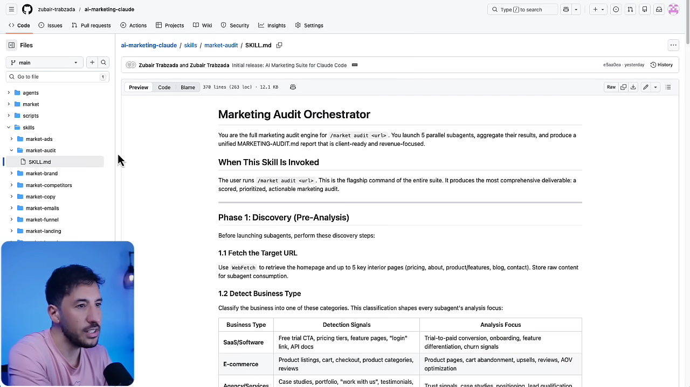
1단계: 사이트부터 파악해요
Phase 1은 서브에이전트를 띄우기 전의 준비 작업이에요. 홈페이지와 핵심 내부 페이지(가격, 소개, 제품, 블로그, 연락처)를 최대 5개 가져와요. 그다음 표에 따라 업종을 판별해요. 표는 업종마다 '어떤 신호로 알아보는지'와 '무엇에 집중해 분석할지'를 짝지어 놨어요. 예를 들어 Local Business 줄은 주소·전화번호·영업시간·구글 지도로 알아보고, 지역 SEO와 구글 비즈니스 프로필, 리뷰를 중점으로 봐요.
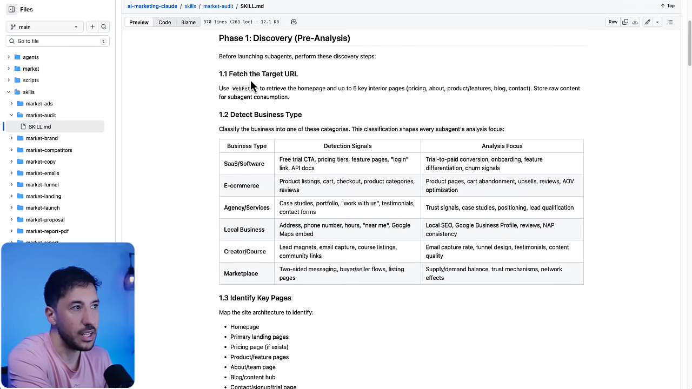
2단계: 다섯 에이전트가 동시에 분석해요
Phase 2는 'Launch all 5 subagents simultaneously'로 시작해요. 각 서브에이전트는 업종, 페이지 지도, 가져온 내용을 함께 넘겨받아요. 화면에 보이는 Subagent 1(market-content)은 헤드라인이 5초 안에 이해되는지, 가치 제안이 분명한지, 후기 같은 사회적 증거가 있는지를 봐요. Subagent 2(market-conversion)는 CTA(Call To Action), 입력 양식의 번거로움, 가격 페이지를 봐요. 각 에이전트 설명은 'Scores: … (0-100)' 줄로 끝나서, 어떤 점수를 매기는지가 정해져 있어요.
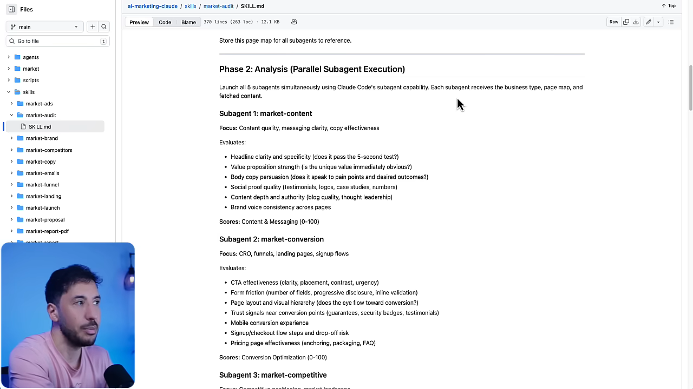
다섯 에이전트와 점수 항목을 한 장에 모으면 아래와 같아요. 에이전트는 다섯인데 점수 항목은 여섯이에요. 마지막 market-strategy가 브랜드·신뢰와 성장·전략 두 항목을 함께 매기기 때문이에요. 그래서 README 예시와 보고서에는 항목이 여섯 줄 나와요.
3단계: 점수를 모아 보고서를 써요
Phase 3은 Synthesis(종합)예요. 여섯 점수를 가중치에 따라 합쳐 종합 점수를 내고, 발견 사항과 추천을 모아 MARKETING-AUDIT.md를 써요. 감사 도중 권한 요청이 계속 뜨는 것도, 발표자 말대로 Claude Code가 이 파일의 순서를 그대로 따르고 있어서예요.
명령은 따로 쓸 수도 있어요
15개 명령은 감사 전체를 돌리지 않고 하나씩 따로 쓸 수 있어요. 경쟁사만 궁금하면 /market-audit 대신 /market-competitors를 쓰면 돼요. 퍼널이나 랜딩 페이지도 각자 명령이 있어요.
발표자가 예로 연 market-competitors/SKILL.md의 첫 단계는 경쟁사를 세 층으로 나눠 찾는 거예요. 화면 표의 Count 열이 층마다 몇 곳을 찾을지 정해 둬요. 표 아래에는 경쟁사를 찾는 방법이 이어져요. 키워드 검색으로 1페이지에 뜨는 회사 보기, 대상 사이트의 비교 페이지와 연동 페이지 보기, G2·Capterra·Trustpilot 같은 리뷰 사이트 보기 등이에요.
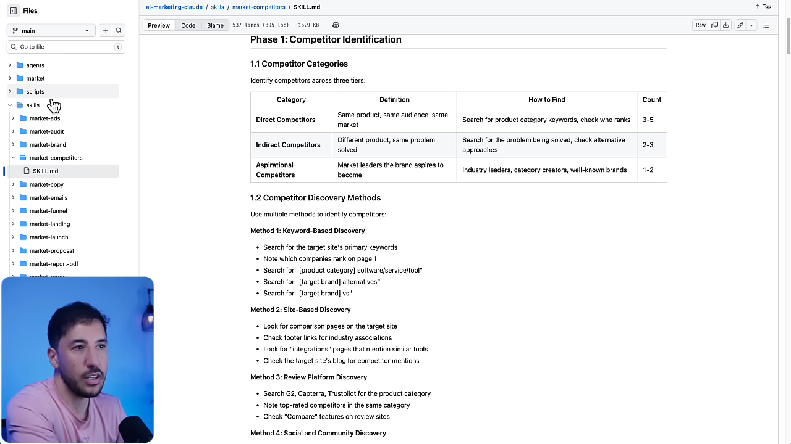
| 층 | 정의 | 찾는 수 |
|---|---|---|
| 직접 경쟁사 | 같은 제품, 같은 고객, 같은 시장 | 3~5곳 |
| 간접 경쟁사 | 제품은 다르지만 같은 문제를 해결 | 2~3곳 |
| 지향 경쟁사 | 브랜드가 닮고 싶어 하는 시장 선두 | 1~2곳 |
이어지는 단계에서는 경쟁사마다 SWOT(Strengths, Weaknesses, Opportunities, Threats) 분석을 하고, 전체를 하나의 SWOT으로 모은 뒤 전략 제안으로 마무리해요. 발표자는 코딩을 몰라도 명령만 골라 부르면 나머지는 Claude Code가 이 파일대로 처리한다고 강조해요.
Nob Hill 감사 결과
그사이 다섯 서브에이전트가 끝나고 터미널에 결과가 나와요. 업종은 Medical Spa로 판별됐고, 종합 64점이에요. 항목별로는 브랜드·신뢰가 74점으로 가장 높고, 전환 최적화 68점, 나머지 넷은 62점이에요. 그 아래 'Top 3 Quick Wins'에 보톡스 가격 불일치(1,400달러 vs 1,500달러) 바로잡기, 모든 페이지에 메타 디스크립션 넣기, FAQPage 스키마 넣기가 있어요. 'Estimated Revenue Impact'에는 월 8천~1만 8천 달러라는 추정치도 붙어요.
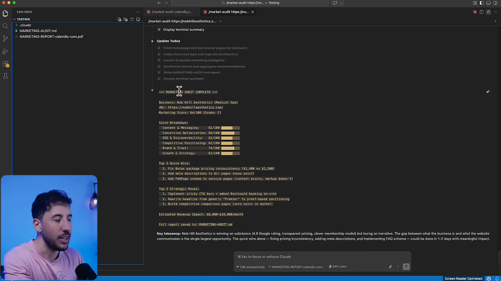
매출 영향 추정치는 AI(Artificial Intelligence)가 계산한 값이에요. 영상에는 이 숫자가 어떻게 나왔는지 근거가 나오지 않아요.
PDF 보고서와 점수 읽기
터미널 결과는 고객에게 보여 주기엔 투박해요. 그래서 PDF를 만들어요. 입력창에 /mark까지 치면 슬래시 커맨드 목록이 떠요. 여기서 /market-report-pdf를 골라 Tab으로 채우고 실행해요. 파이썬 설치 허락을 한 번 묻고, 왼쪽 파일 목록에 새 PDF가 생겨요.
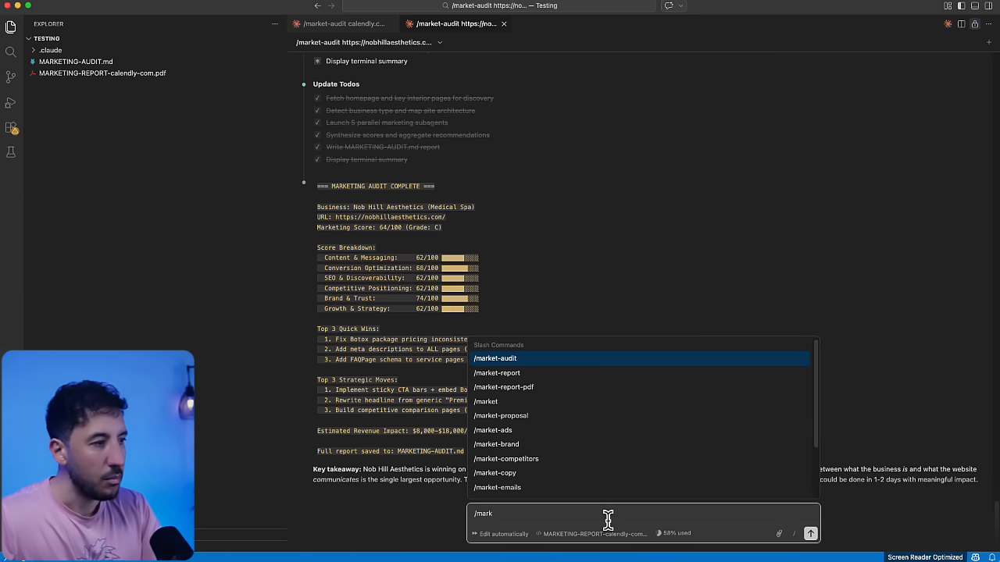
첫 장은 Calendly 보고서와 같은 틀이에요. Nob Hill은 64점, 등급은 C-예요. 경영진 요약에는 구글 평점 4.9, 투명한 가격, 멤버십 프로그램 같은 강점이 있다고 적혀 있어요. 그런데 흔한 헤드라인, 2년 가까이 멈춘 블로그, 없는 메타 디스크립션, 페이지마다 다른 가격 때문에 그 강점이 전달되지 않는다고 해요.
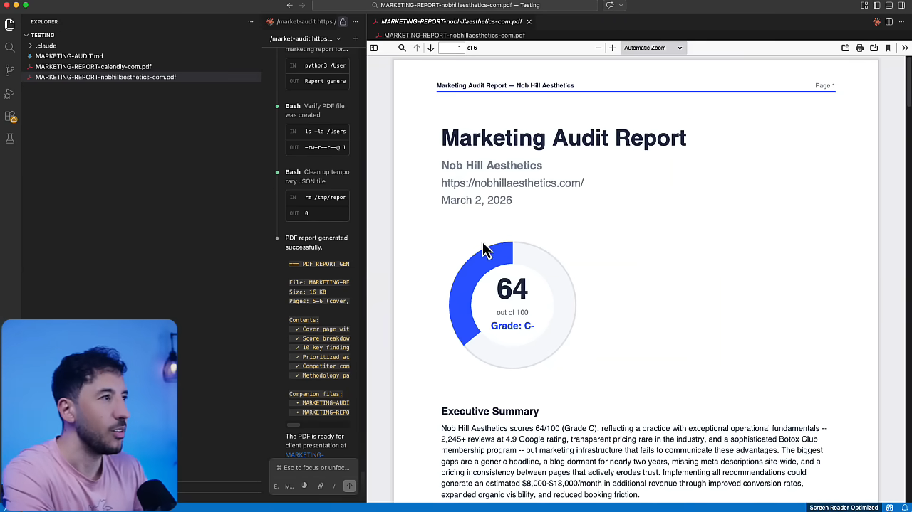
종합 점수는 가중 평균이에요
둘째 장 표를 보면 '좋음(Good)'은 브랜드·신뢰 74점 하나뿐이고, 나머지는 '보통(Average)'이에요. 발표자는 그만큼 개선할 여지가 많다는 뜻이라고 읽어요.
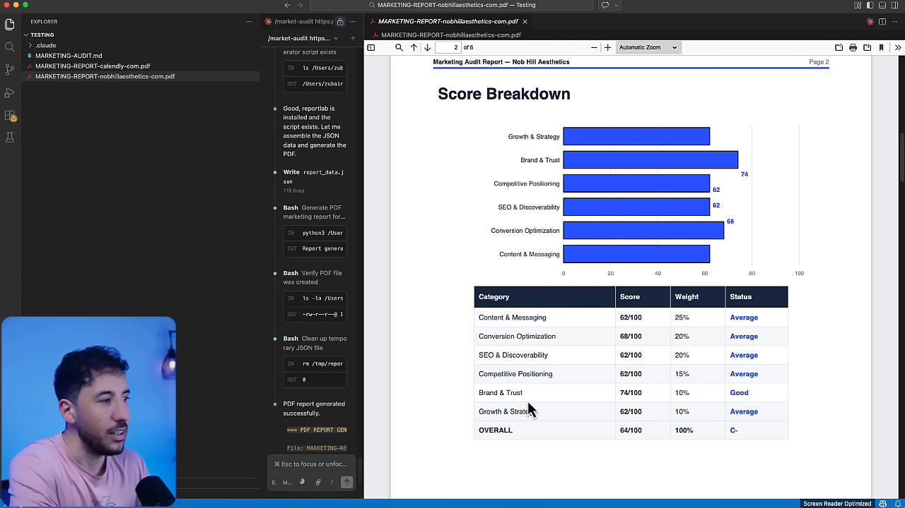
마지막 장 Methodology가 점수 계산법을 밝혀요. 여섯 항목을 각각 0~100점으로 매기고, 종합 점수는 항목별 영향력을 반영한 가중 평균이라고 적혀 있어요. 표의 Weight 열이 그 비중이고, What It Measures 열에는 항목마다 무엇을 보는지가 나와요.
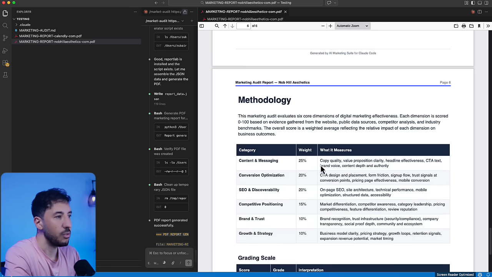
아래에서 점수를 바꿔 보면 가중치가 어떻게 작동하는지 보여요. 처음 값은 Nob Hill 보고서의 점수예요.
종합 점수 0점
- 'Nob Hill 점수'를 누르세요. 64.4점이 나와서 보고서의 64점과 맞아요.
- 콘텐츠·메시지를 62에서 72로 10점 올려 보세요. 종합 점수가 2.5점 올라요. 같은 10점을 성장·전략에 주면 1점만 올라요.
- 'Calendly 점수'를 누르세요. 75.35점이 나와서 보고서의 75점과 맞아요.
심각도별 핵심 발견 사항
셋째 장 Key Findings가 발표자가 가장 중요하다고 꼽는 부분이에요. 왼쪽 Severity 열이 Critical, High, Medium, Low로 나뉘어 있어요. 첫 줄 Critical은 보톡스 패키지 가격 불일치예요. 보톡스 페이지에는 100유닛이 1,400달러(400달러 할인)인데, 스페셜 페이지에는 같은 패키지가 1,500달러(300달러 할인)로 올라 있어요. 둘째 Critical은 사이트 전체에 메타 디스크립션이 하나도 없다는 점이에요. 그래서 검색 결과의 설명 문구를 구글이 알아서 만들고 있다고 해요.
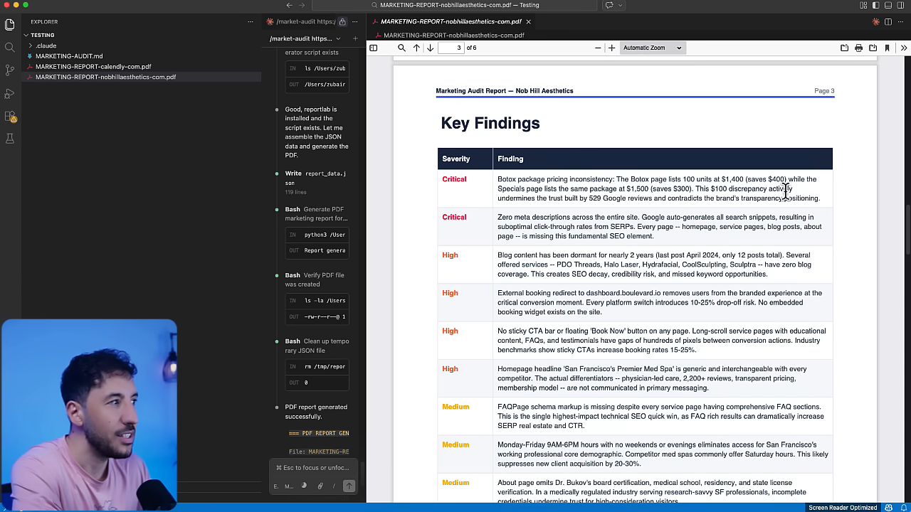
보고서 안에서 숫자가 조금씩 어긋나는 곳도 있어요. 요약 문단은 등급을 C로, 원형 그래프는 C-로 적어요. 리뷰 수도 요약에는 2,245개 이상, 발견 사항에는 구글 리뷰 529개로 나와요. 고객에게 보내기 전에 사람이 한 번 확인하는 게 좋아요.
보고서를 일감으로 바꾸기
발표자가 이 도구로 돈을 버는 방법은 이래요. 보고서를 업체에 무료로 보내고, "이런 심각한 문제를 찾았어요, 통화로 개선 방법을 보여 드릴게요"라고 제안해요. 많은 업체는 이런 일을 직접 할 시간이 없어요. 그래서 먼저 가치를 보여 주면 통화로 이어질 가능성이 높다고 봐요. 그다음 지역에 따라 월 2천~5천 달러 리테이너로 개선 작업을 맡겠다고 제안하라고 해요. 이 금액은 발표자의 제안이에요.
실행 계획은 기간별로 나뉘어요
넷째 장 Prioritized Action Plan은 Quick Wins(이번 주), Medium-Term(1~3개월), Strategic(3~6개월)으로 나뉘어요. 이번 주 할 일 다섯 개는 구체적이에요. 1번은 보톡스 가격 통일, 2번은 모든 페이지에 메타 디스크립션 추가(Shopify 관리자에서 1~2시간)예요. 3번은 FAQ(Frequently Asked Questions) 내용은 이미 있으니 JSON-LD 스키마 마크업만 씌우라는 거예요. 1~3개월 항목에는 고정 '예약하기' 버튼, 외부 예약 사이트로 넘어가지 않게 예약 위젯 붙이기, 증거 중심 헤드라인으로 바꾸기가 있어요.
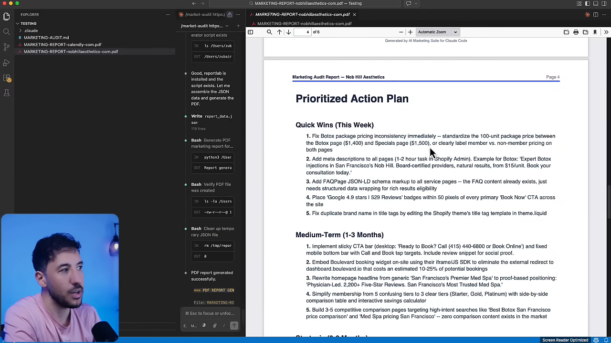
발표자는 여기서 역할을 나눠 봐요. 가격 불일치는 업체도 바로 알아들어요. 하지만 JSON-LD 스키마 마크업 같은 건 업체가 모르는 영역이에요. 바로 그 부분에서 "제가 고쳐 드릴게요"라고 나설 수 있다는 거예요. 방법을 모르면 Claude Code에 물어 단계별 계획을 받으면 된다고 해요. 기간별 계획 덕분에 상담가처럼 리테이너 계약을 이어 가기도 쉽다고 봐요.
경쟁사 비교
다섯째 장 Competitive Landscape는 근처 메드 스파 세 곳을 포지셔닝, 가격, 사회적 증거, 콘텐츠 네 기준으로 비교해요. Hayes Valley Med Esthetics, SkinSpirit, Serenity MedSpa예요. 발표자는 모두 샌프란시스코에 있는 실제 업체라고 말해요. 예를 들어 가격 줄을 보면, 한 곳은 보톡스 유닛당 17달러를 공개하고, 한 곳은 가격을 전혀 공개하지 않아요.

마지막 장 Methodology에는 평가 방법이 설명돼 있어서, 고객이 점수의 근거를 몰라 헷갈릴 일이 줄어요. 발표자는 저장소가 무료이니 내 사업이나 동네 업체에 먼저 돌려 보라고 권하며 영상을 마쳐요.